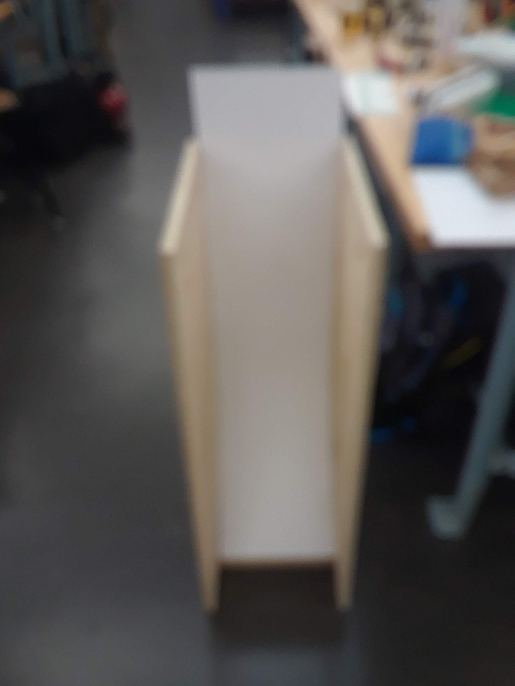

The goal for this project was to build a ramp for Gravity Vehicle(Science Olympiad event). It needs to be sturdy and smooth so that a car can roll down it reliably, and built to stict size constaints.
As it turns out, making a curved ramp out of wood is not trivial
The solution: a 'living hinge' made by putting a lot of cuts in a flat piece of MDF so that it can bend.
To make this, I modled the ramp in Fusion 360
then cut it out on the Shopbot CNC router.
I assembled the parts using the finger joints, held together with screws in strategic locations (i.e. pretty much everywhere).
The result is a respectble ramp that works wonderfuly for launching gravity powered vehicles.
